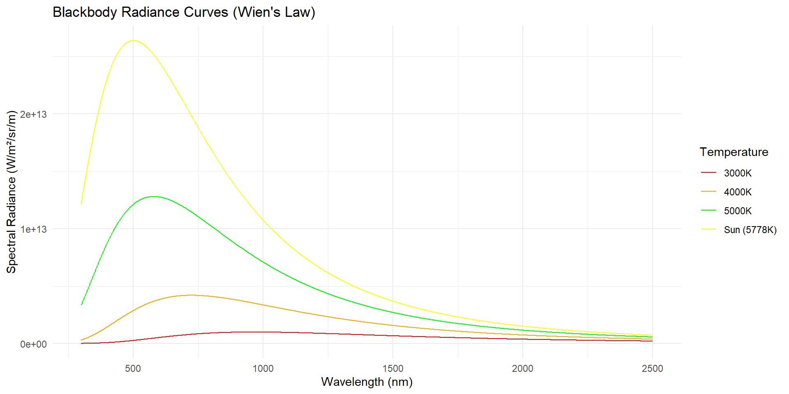
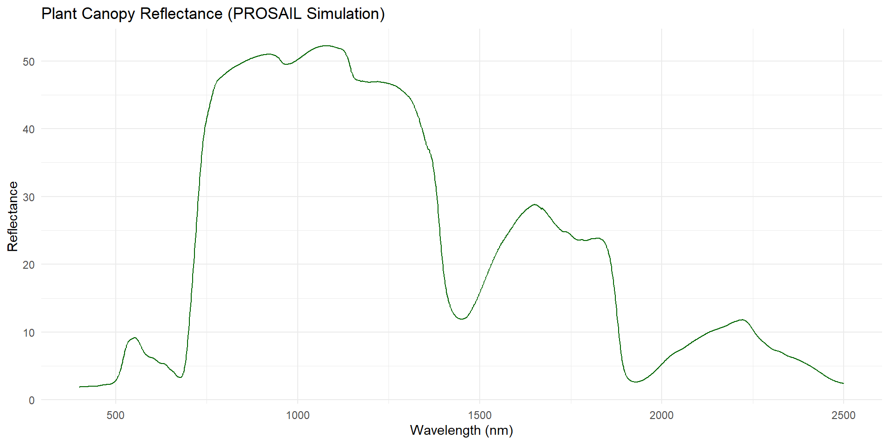
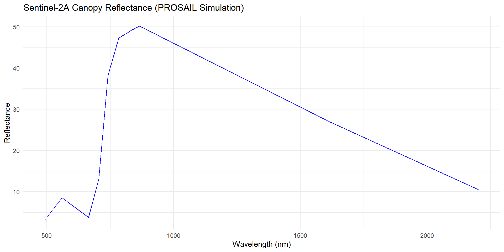
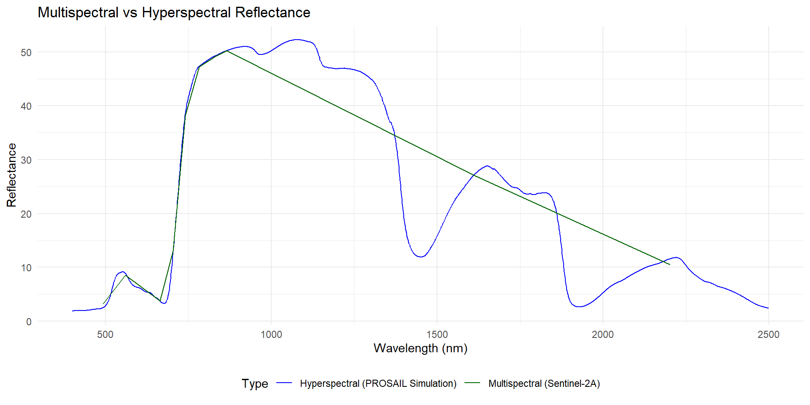
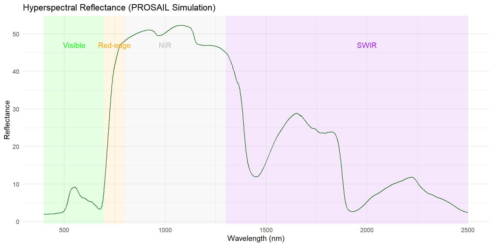
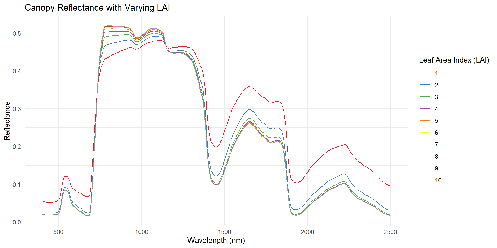
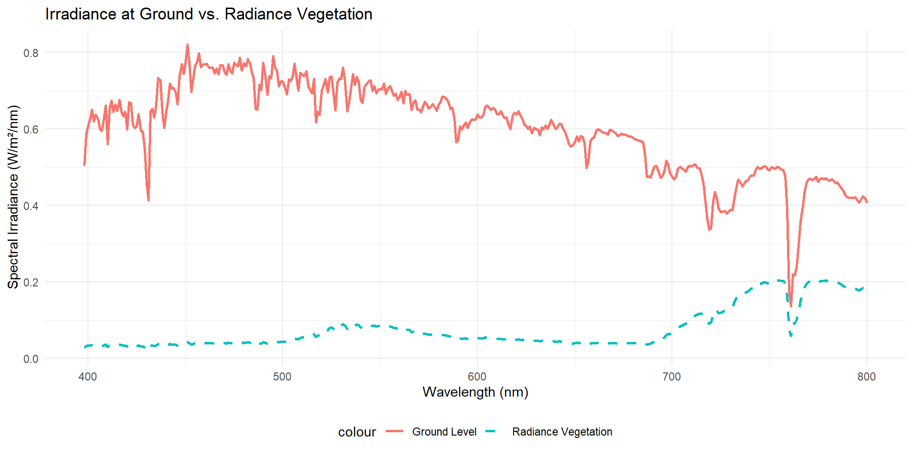

Application III: Integrating SAR for Soil Moisture Estimation
Data to Decision: Workflow from Satellite Imagery to VRT
Future Trends: AI, Data Fusion, and UAV integration in WA
What is Remote Sensing?
Definition: Non-contact measurement of Earth features across visible and nonvisible EM spectra
Encompasses aerial, satellite, radar, and thermal instruments
Proximal sensing vs. remote sensing distinctions
Real-Time Kinematic (RTK) GPS for sub-cm geolocation
Rate controllers link spatial data to variable-rate applications
Applications in WA: e.g., mapping soil types in the Ord River Irrigation Area, monitoring canopy health (NDVI) in Margaret River vineyards, and delineating management zones in broadacre wheat fields.
graph LR A[Remote Sensing] --> B[Satellite Imagery] A --> C[Aerial Photography] A --> D[Radar] A --> E[Thermal Imaging] A --> F[Proximal Sensors] style A fill:#f9f,stroke:#333,stroke-width:1px
Electromagnetic Spectrum in Agriculture
Ultraviolet (100–400 nm) through microwave (1 mm–1 m) spectral range used in PA operations
Visible (400–700 nm) and NIR (700–1100 nm) bands for vegetation indices (e.g., NDVI, EVI)
SWIR (Short-Wave Infrared) bands are critical in WA for assessing soil and crop moisture content.
Multispectral vs. hyperspectral imaging: band count vs. spectral resolution trade-offs
Platforms like Sentinel-2 provide key bands (Visible, Red Edge, NIR, SWIR), while UAVs with sensors like MicaSense offer high-resolution data.
Non-imaging spectroradiometers capture point spectra across wide wavelength ranges
Thermal infrared (8–14 µm) sensors monitor canopy temperature and plant stress
Radar (3 MHz–110 GHz), LiDAR, ultrasonic and audio modalities for moisture, structure, topography and pest/equipment monitoring
Blackbody Radiance

Vegetation Spectra

Sentinel Convolution

Spectral Resolution Degradations

Spectral regions

Passive vs Active Remote Sensing
Passive sensors rely on ambient solar radiation, capturing spectral reflectance across visible bands (blue, green, red)
In WA, performance is limited by winter cloud cover in the southwest and seasonal bushfire smoke.
Require rigorous radiometric correction and precise image georectification to ensure quantitative accuracy
Performance constrained by clear-sky conditions, solar angle variability, and cloud cover
Active sensors emit their own illumination (e.g., LiDAR, RADAR), enabling data collection day/night and under cloudy skies
Sentinel-1 (SAR) is invaluable for mapping soil moisture and crop structure through clouds, crucial for in-season decisions in the grainbelt.
Sensing range and spatial resolution limited by onboard light-source power, beam divergence, and platform payload capacity
Promising integration with UAS for rapid revisit rates, yet research is needed to extend operational range and reduce system weight
Spectra by LAI

Radiances

Key Components of Satellite Imaging Systems
Cost-effective monitoring of crop and soil variability across paddock to regional scales
Spatial resolution: pixel ground size defining the smallest detectable feature
Spectral resolution: number and width of bands for discriminating vegetation and soil signatures
Radiometric resolution: digital levels per band for detecting subtle reflectance differences
Temporal resolution: revisit frequency critical for tracking growth dynamics and stress events
Sensor selection depends on the WA application: Sentinel-2 for paddock-scale variability, PlanetScope for daily monitoring of high-value crops, and Landsat for long-term historical analysis.
Practical Orbital Characteristics
Sun-Synchronous Orbit: Most Earth observation satellites (like Landsat and Sentinel) are in a sun-synchronous orbit. This means they pass over any given point on Earth at the same local solar time, which provides consistent illumination for comparing images over time.
Revisit Frequency vs. Swath Width: There is a trade-off between how often a satellite can image a location (revisit time) and how wide an area it can see (swath width). Wider swaths allow for more frequent revisits.
Satellite Constellations: Companies like Planet operate large constellations of small satellites (above 240 active). This allows them to achieve very high temporal resolution (e.g., daily revisits) by having many satellites working together.
Resolutions in Satellite Imagery
Spatial resolution: defines ground sample distance (e.g., 0.3–500 m)
Spectral resolution: number and width of wavelength bands (e.g., multispectral, hyperspectral)
Radiometric resolution: quantization levels per band (e.g., 8–12 bits)
Temporal resolution: revisit frequency (e.g., daily to biweekly)
Sensor examples for WA: PlanetScope (~3-5 m), Sentinel-2 (10-20 m), Landsat 8/9 (30 m), and MODIS (250-500 m for regional views).
Positional Accuracy: Expect ~5-10 m geolocation error for free data (Sentinel/Landsat), suitable for paddock zones but may require ground control for precision alignment.
graph LR A[Satellite Imagery Resolutions] --> B[Spatial Resolution] A --> C[Spectral Resolution] A --> D[Radiometric Resolution] A --> E[Temporal Resolution]
Overview of Satellite Data Sources
Optical imagery (e.g., Sentinel-2) provides key vegetation indices like NDVI (using 10m Red and NIR bands) and NDRE (using Red Edge bands) for crop health.
Synthetic Aperture Radar (e.g., Sentinel-1 C-band) provides reliable soil moisture and crop structure data, unaffected by cloud cover.
Historical archives (Landsat back to the 1980s) to validate and refine multi-year management zones
Data fusion frameworks combining optical and radar to improve spatial and temporal coverage
Collaborative analytics pipelines from DPIRD, CSIRO, and GRDC are key for developing and validating WA-specific models for management zone (MZ) delivery.
Intro to Planet, Sentinel, and Landsat
Landsat 8/9: Multispectral (30 m), Thermal IR (100 m native, resampled to 30 m); 8-day combined revisit.
Sentinel-2: 10 m & 20 m MSI including multiple Red Edge & SWIR bands; ~3-4 day revisit over WA.
PlanetScope: ~3-5 m resolution with daily revisit potential, though limited by cloud cover during the winter growing season.
WorldView-2: Panchromatic & 8-band MSI (Coastal, Yellow, Red Edge, NIR); 0.5–1.8 m; daily revisit (High-cost commercial).
Web/cloud services: highly scalable storage and on-demand applications, rapid feature updates; underutilized due to security and ownership concerns
Data volume: multi-terabyte seasonal streams from sensors, GPS, yield monitors, and UAV imagery
Processing requirements: high-throughput data ingestion, edge-to-cloud synchronization, real-time analytics, and machine learning pipelines
Integration workflows: emerging standardized protocols and APIs, but trust, privacy, and provider lock-in remain barriers
Atmospheric Correction
Use MODTRAN-based models to estimate atmospheric transmittance in VIS-NIR bands
Correct top-of-atmosphere radiance to surface reflectance employing the 6S radiative transfer model
Incorporate aerosol optical depth data from AERONET or satellite-derived sources for aerosol scattering corrections
Apply water vapor and ozone absorption adjustments using temporally aligned meteorological profiles
Include adjacency effect correction to mitigate reflectance contamination from neighboring pixels
Validate corrected reflectance against in-situ spectral ground-truth measurements to maintain < 5 % RMSE
flowchart LR A[Raw Top-of-Atmosphere Radiance] --> B[Sensor Radiometric Calibration] B --> C[6S Atmospheric Model] C --> D[Apply Atmospheric Correction] D --> E[Derive Surface Reflectance] E --> F[Validation with In-situ Spectra]
Radar sensors (e.g., SAR) and UAS imaging penetrate or bypass clouds for continuous data acquisition
Spatial resolution vs. coverage trade-off: high-resolution imagery captures fine detail over limited areas; low-resolution rasters cover broad regions
Spectral resolution ranges from RGB to multispectral and hyperspectral sensors for advanced vegetation analysis
Cloud masking algorithms (e.g., Fmask, QA bands) automatically detect and exclude cloudy pixels from imagery
Cloud-free composites integrate masked data streams to provide uninterrupted temporal monitoring
flowchart LR A[Satellite Optical Data] --> B{Cloud Cover?} B -- Yes --> C[Radar & UAS Acquisition] B -- No --> D[Process Optical Imagery] C --> D D --> E[Cloud Masking (Fmask/QA Bands)] E --> F[Cloud-Free Composite Generation]
Challenges in Using Satellite Imagery
Cloud cover and atmospheric scattering degrade spectral fidelity
Spatial resolution limits detection of sub-field variability
Limited spectral bands hinder discrimination of crop stress signatures
NDWI–Hyperion defined as (R1070 – R1200) / (R1070 + R1200)
Sensitive to water absorption peak near 1200 nm (Ustin et al. 2002)
Demonstrates robust correlation with LWC (R² ≈ 0.42–0.50 across conditions)
Outperforms single-band indices by normalizing bidirectional reflectance effects
Comparable to Vegetation Dry Index and NIR index in predictive accuracy
Readily implementable on UAV and satellite multispectral sensors
Soil-Adjusted Vegetation Index (SAVI)
Incorporates soil-adjustment factor L to reduce background soil signal
Defined as SAVI = (NIR – RED) / (NIR + RED + L) × (1 + L)
Typical L = 0.5 for intermediate vegetation cover, adjustable based on canopy density
Enhances sensitivity to green biomass in early growth stages over bare soils
Demonstrated stronger correlations with leaf area index (LAI) and chlorophyll content vs. NDVI
Integral in precision nitrogen management by refining spatial N status estimates
flowchart LR A[NIR Reflectance] --> D[Num: NIR - RED] B[Red Reflectance] --> D A --> E[Den: NIR + RED + L] B --> E C[Soil Factor L] --> E D --> F[/ Division /] E --> F F --> G[Multiply by (1+L)] G --> H[SAVI]
Bivariate Moran’s I evaluates spatial correlation between two variables
Google Earth Engine
GEE is THE platform/IDE for Remote Sensing Analysis in the cloud.
Integrating Results into Farm Management
Centralized integration of soil, sensor, and environmental data
Predictive modeling for crop growth, water dynamics, and disease risk
Farmmaps UI visualizes field-level and intra-field variability
Model-derived prescriptions for fertilizers, irrigation, and crop protection
Seamless workflow alignment with farmer management schedules
Continuous feedback loop refines models based on field outcomes
graph LR A[Soil & Sensor Data] --> D(Farmmaps Platform) B[Weather & Environmental Data] --> D C[Yield & Imaging Data] --> D D --> E[Variability Visualization] D --> F[Prescriptive Recommendations] E --> G[Farm Management Actions] F --> G
Integrating Satellite Data with Ground Sensors
Fusion of geophysical sensors and satellite imagery for comprehensive soil variability mapping
Combining high-spatial-resolution multispectral data with high-temporal-resolution satellite revisits
Co-located on-the-go soil probes and stationary EMI/GPR sensors for calibration and validation
GNSS-enabled yield monitors and crop/soil sensors supplying real-time geo-referenced data
Spatio-temporal data fusion via kriging, machine learning, and data assimilation workflows
Multi-layered soil profile characterization: structure, moisture, nutrient distribution